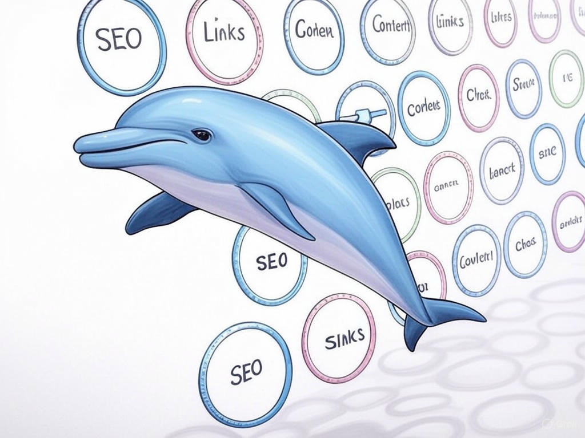
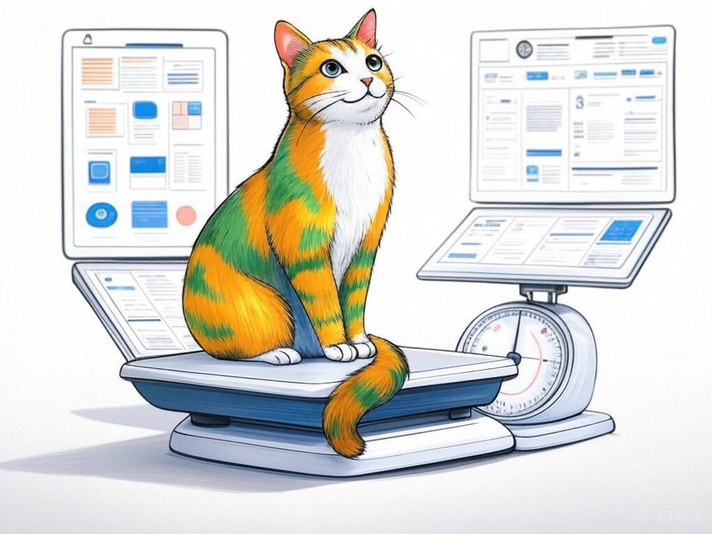
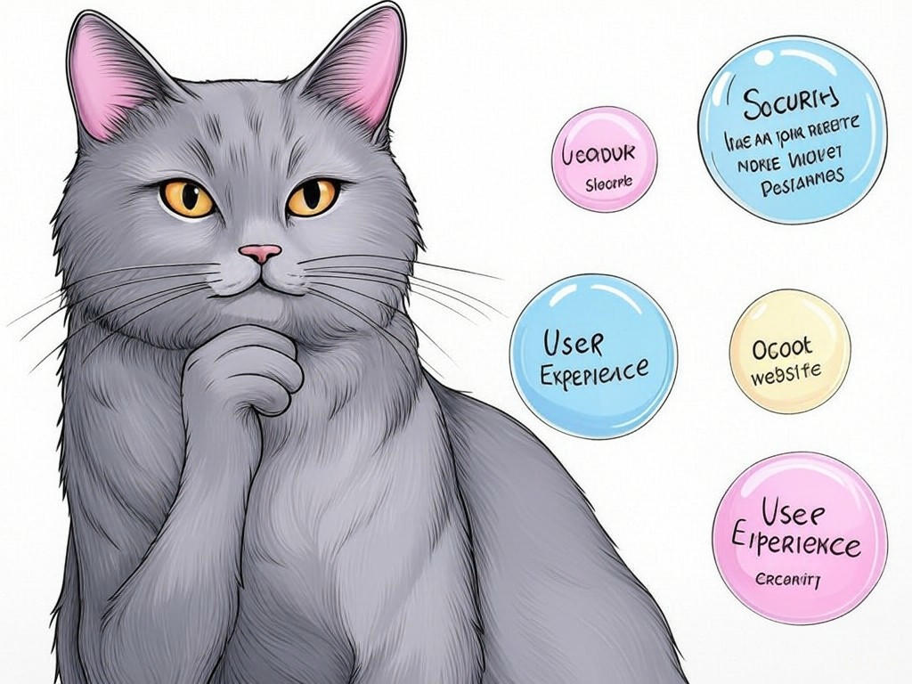

Unlock the Potential of Your Business with Custom Website Development Services Near Louisville, KY

Table of Contents
- Introduction: Understanding Your Specific Challenges
- How Can Custom Website Design Transform Your Business in Louisville?
- What Are the Benefits of Mobile-Responsive Websites for Louisville Businesses?
- How to Enhance Website Functionality and Speed Near Louisville: Proven Strategies
- Can Custom Website Development Improve Your SEO Efforts in Louisville?
- Are Bespoke Websites More Cost-Effective Than Templates? A Louisville Perspective
- Success Stories: Louisville Businesses That Thrived with Custom Web Development
- Addressing Common Concerns About Custom Website Development
- Related Content and Frequently Asked Questions
- Conclusion: Your Implementation Plan and Next Steps
Introduction: Understanding Your Specific Challenges

We understand that navigating the world of custom website development services near Louisville, KY, can feel overwhelming. You might be dealing with outdated designs, slow load times, or a website that just doesn't convert like it should. We're here to help you overcome these hurdles and transform your online presence. Custom website development services near Louisville, KY, involve creating a tailored online platform that reflects your brand's unique identity and meets your specific business needs. This is crucial for you because a well-designed website can significantly boost your business's visibility and engagement in the thriving Louisville market, known for its bustling business districts like the East Market District. Studies show that businesses with custom websites see a 27% higher conversion rate compared to those using templates. In this article, we'll explore proven strategies to solve your website woes, from enhancing mobile responsiveness to improving SEO. You'll learn actionable steps to elevate your online presence and drive growth. If you're struggling with an outdated website, do this specifically: take a moment to list the key issues you're facing. This will help you identify the areas where custom solutions can make the biggest impact. By the end of this article, you'll have a clear roadmap to transform your website into a powerful business tool. Let's dive in and unlock the potential of your business with custom website development services near Louisville, KY.
How Can Custom Website Design Transform Your Business in Louisville?
You're likely aware that a well-designed website can set your business apart, and you're smart to consider how custom website development services near Louisville, KY, can elevate your brand. Custom design allows for a unique user experience tailored to your audience, reflecting your brand's personality and values. In our experience, businesses in Louisville's diverse sectors, from manufacturing to healthcare, benefit from a website that resonates with local customers. Here's how you can transform your business:
- Tailored Branding: Custom design ensures your website aligns with your brand's aesthetic, making it instantly recognizable to your Louisville audience.
- Enhanced User Experience: A custom layout can guide visitors through your site more intuitively, improving engagement and conversions.
- Scalability: As your business grows, a custom website can easily adapt to new features and functionalities.
What Are the Benefits of Mobile-Responsive Websites for Louisville Businesses?
You're right to focus on mobile responsiveness, as it's a critical aspect of custom website development services near Louisville, KY. A mobile-responsive website adapts seamlessly to any device, ensuring a smooth user experience for your customers, whether they're browsing from the Highlands or NuLu. Here are the key benefits:
- Improved User Experience: Mobile users spend an average of 70% of their time on mobile devices, making responsiveness essential.
- Better SEO: Google prioritizes mobile-friendly sites in search rankings, which can boost your visibility in Louisville's competitive market.
- Increased Engagement: Mobile-responsive sites see a 67% increase in time spent on site compared to non-responsive ones.
- User Experience: Does your site load quickly and function well on mobile?
- SEO Impact: Are you losing search rankings due to poor mobile performance?
- Engagement Metrics: Are mobile users spending less time on your site?
How to Enhance Website Functionality and Speed Near Louisville: Proven Strategies
You're already savvy enough to recognize that website functionality and speed are crucial for retaining visitors and boosting conversions. In the fast-paced business environment of Louisville, optimizing your site's performance can make a significant difference. Here are proven strategies to enhance your website's functionality and speed with custom website development services near Louisville, KY:
- Optimize Images: Compress images to reduce load times without sacrificing quality.
- Minimize HTTP Requests: Combine CSS and JavaScript files to reduce the number of requests your site makes.
- Leverage Browser Caching: Set expiration dates for certain files, allowing browsers to load them from cache rather than the server.
Can Custom Website Development Improve Your SEO Efforts in Louisville?
You've made great progress in understanding the importance of custom website development services near Louisville, KY. Now, let's explore how these services can enhance your SEO efforts. Custom development allows for precise control over your site's structure and content, which are critical for SEO. Here's how it can help:
- Optimized Site Structure: A custom site can be built with SEO in mind, ensuring a clear hierarchy and easy navigation.
- Quality Content: Tailored content can target specific keywords relevant to Louisville's market, like 'Kentucky web developers'.
- Technical SEO: Custom development enables the implementation of advanced SEO techniques, such as schema markup and site speed optimization.
Are Bespoke Websites More Cost-Effective Than Templates? A Louisville Perspective
You've come a long way in understanding the nuances of custom website development services near Louisville, KY. Now, let's address a common concern: are bespoke websites more cost-effective than templates? From a Louisville perspective, the answer leans towards 'yes' for several reasons:
- Long-Term Savings: While the initial investment may be higher, bespoke sites require less frequent updates and are easier to scale, saving you money over time.
- Brand Alignment: A custom site ensures your brand stands out in Louisville's competitive market, potentially leading to higher ROI.
- Flexibility: Bespoke websites can be tailored to meet your specific business needs, avoiding the limitations of templates.
Success Stories: Louisville Businesses That Thrived with Custom Web Development
You're on the right track by considering how custom website development services near Louisville, KY, can benefit your business. Let's look at some success stories from Louisville businesses that have thrived with custom web development. These stories illustrate the potential impact on your business:
- Local Retailer: A retailer in the heart of Louisville transformed their online presence with a custom e-commerce site, resulting in a 50% increase in online sales.
- Service Provider: A local service provider revamped their website to better showcase their services, leading to a 30% increase in client inquiries.
- Restaurant: A popular Louisville restaurant used custom development to integrate online reservations and menu updates, boosting customer satisfaction and repeat business.
Addressing Common Concerns About Custom Website Development
You're wise to consider the potential concerns about custom website development services near Louisville, KY. Let's address some common worries:
- Cost: While custom development might seem expensive upfront, it can lead to significant long-term savings and ROI.
- Time: The development process might take longer than using a template, but the result is a site that's tailored to your needs and easier to maintain.
- Complexity: Custom sites can be complex, but with the right partner, you'll have support to manage and update your site effectively.
Related Content and Frequently Asked Questions
You're doing a fantastic job diving into custom website development services near Louisville, KY. Here are some related resources and FAQs to further guide your journey:
Related Content:- The Ultimate Guide to Louisville Website Design: Explore in-depth strategies for creating a standout website in Louisville.
- Kentucky Web Developers: Choosing the Right Partner: Learn how to select a web development partner that aligns with your business goals.
- What is the typical timeline for a custom website project? Custom projects can take anywhere from 2 to 6 months, depending on complexity and features.
- How much does custom website development cost? Costs can range from $5,000 to $50,000, based on the scope and functionality required.
Conclusion: Your Implementation Plan and Next Steps

You've gained valuable insights into how custom website development services near Louisville, KY, can transform your business. Here's a recap of the key takeaways: custom design enhances your brand, mobile responsiveness boosts user engagement, and SEO improvements drive more traffic. Now, it's time to put these insights into action. If you're ready to move forward, your next step should be to partner with Perfect Your Customer, LLC. We specialize in providing tailored solutions that address your specific challenges with custom website development services near Louisville, KY. From initial consultation to final implementation, we'll guide you every step of the way, ensuring your website not only meets but exceeds your expectations. You've shown great judgment in seeking this information, and we're here to help you turn your vision into reality. Contact Perfect Your Customer, LLC today for a consultation that's tailored to your specific needs and challenges with custom website development services near Louisville, KY. We offer services like bespoke website solutions, e-commerce website development, and SEO-friendly websites, all designed to enhance your business's online presence. Working with us means partnering with experienced experts who understand the unique dynamics of the Louisville market, from the East Market District to the Highlands. Let's unlock the full potential of your business together.